<template>
    <my-portfolio-box>
        <h1 slot="title">Bài tập buổi 1</h1>
        <div slot="content">
            <h3>Tóm tắt</h3>
            <ul>
                <li>Sử dụng file explored</li>
                <li>Tạo thư mục/ tệp tin</li>
                <li>Di chuyển thư mục, tệp tin</li>
                <li>Xoá thư mục, tệp tin</li>
            </ul>
            <note-box type="info">Để phù hợp hơn với cấu hình hiện đại, mình xin phép được trình bày theo thao tác khác đi để phù hợp với môi trường linux. Cụ thể hơn, mình sẽ sử dụng nhiều dòng lệnh hơn so với giao diện đồ hoạ thông thường.</note-box>
            <h3>Các bước cụ thể</h3>
            <p>Mở file explored (trong trường hợp này mình sử dụng linux nên mình sẽ dùng files mặc định của nó)</p>
            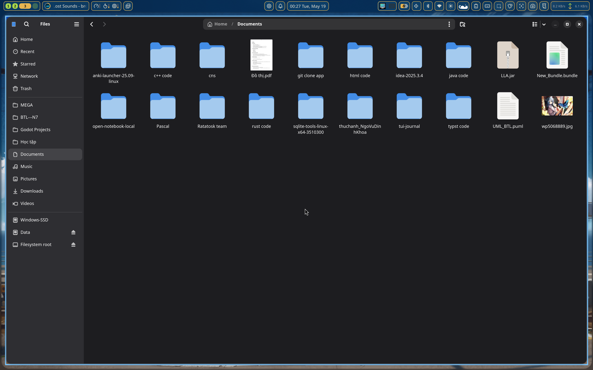
            <p>Truy cập ổ đĩa không phải là của hệ điều hành</p>
            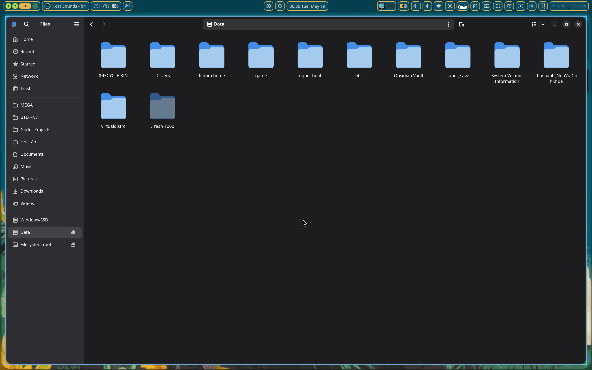
            <p>Vì quá phức tạp nên chúng ta sẽ quay lại với thư mục document trước đó</p>
            <p>Mở thư mục đó ra, ấn new để chọn tạo một thư mục</p>
            <p>Đối với linux, người ta thường dùng lệnh mkdir để tạo ra một thư mục riêng, ở đây ta sẽ đặt tên là ThucHanh_NgoVuDinhKhoa</p>
            <code-box>mkdir ThucHanh_NgoVuDinhKhoa</code-box>
            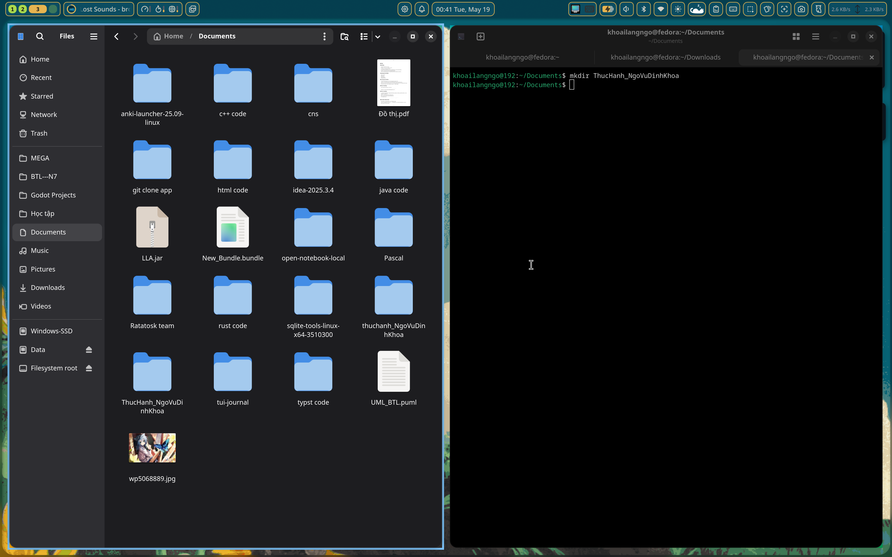
            <p>Rồi sau đó vào thư mục được chọn</p>
            <p>Để tạo một file ghi chú mới, ta có thể nhấp chuột phải vào chọn new, một cách khác đó là sử dụng câu lệnh touch để tạo file.</p>
            <p>Mở console bên cạnh thư mục mà bạn muốn có file, sau đó gõ dòng lệnh</p>
            <code-box>touch GhiChu.txt</code-box>
            <p>Một file mới sẽ được tạo ra.</p>
            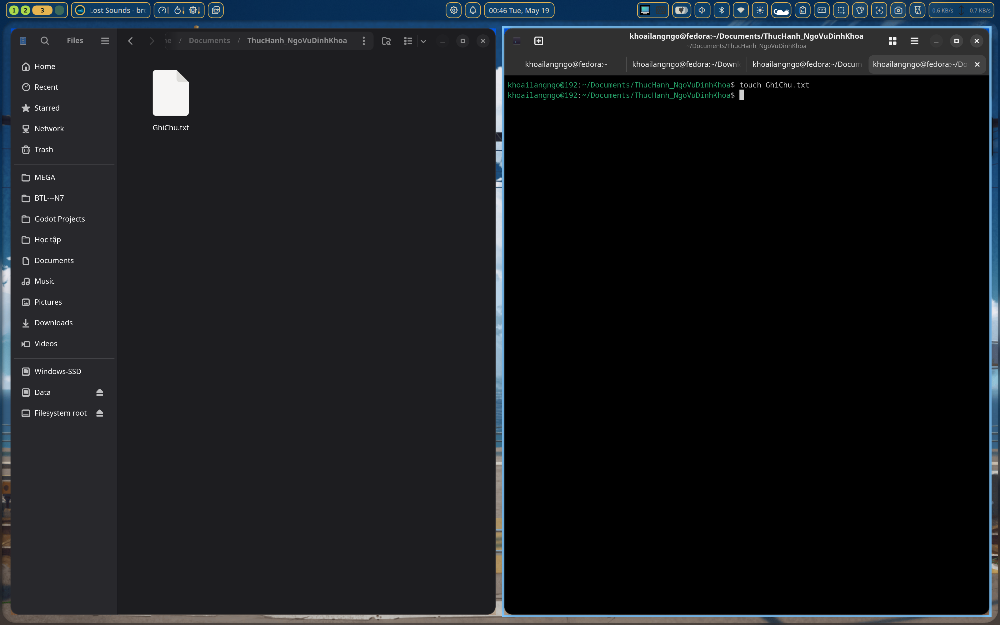
            <p>Để đổi tên ghi chú, ta có thể bấm chuột phải chọn rename</p>
            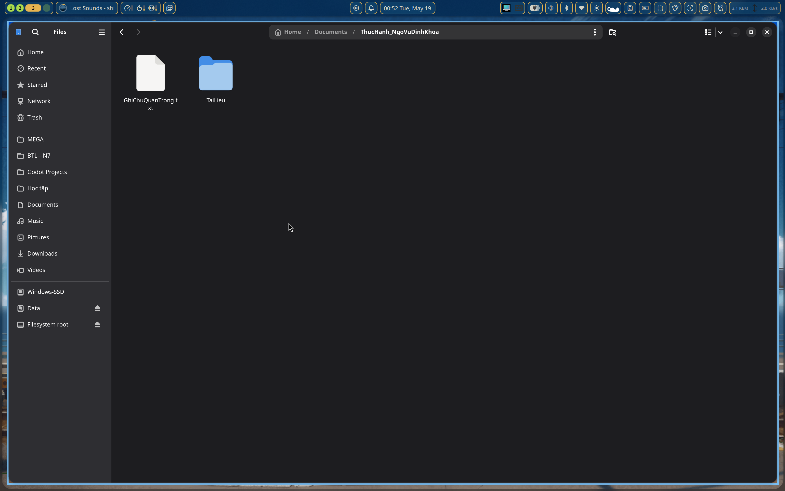
            <p>Để tạo thư mục con trong thư mục chính đó, ta tiếp tục dùng câu lệnh mkdir</p>
            <p>mở console mà bạn vừa tạo file ghi chú lúc nãy, gõ></p>
            <code-box>mkdir TaiLieu</code-box>
            <p>Một thư mục mới sẽ hiện ra</p>
            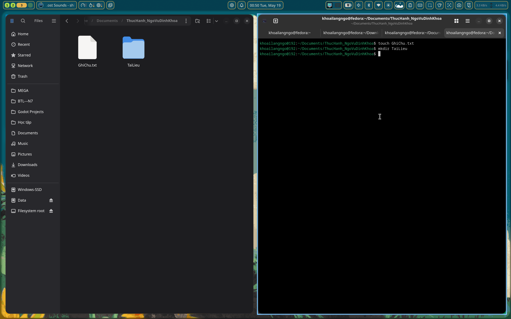
            <p>Để sao chép một file, ta sử dụng lệnh cp, cú pháp là cp [tên file cần di chuyển] [đích đến của file đó, có thể là đường dẫn tuyệt đối hoặc tương đối]</p>
            <code-box>cp GhiChuQuanTrong.txt ./TaiLieu</code-box>
            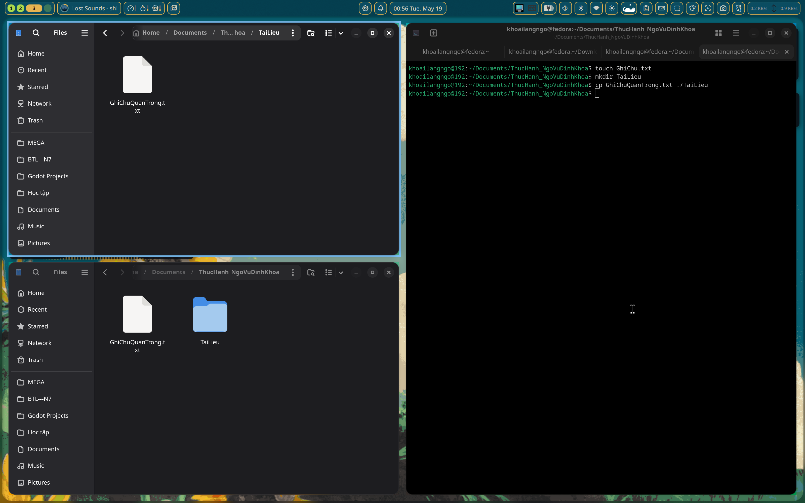
            <p>Để di chuyển một file, ta sử dụng lệnh mv, cú pháp là mv [tên file cần di chuyển] [đích đến của file đó, có thể là đường dẫn tuyệt đối hoặc tương đối]</p>
            <code-box>touch DiChuyen.txt
mv DiChuyen.txt ./TaiLieu</code-box>
            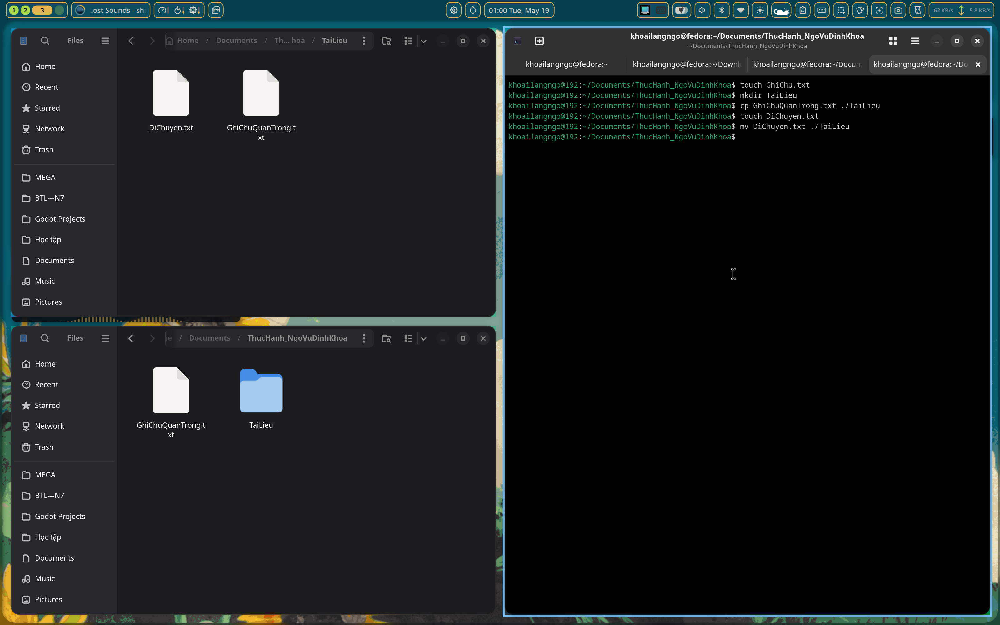
            <p>Để xoá một file vào thùng rác, ta click chuột vào file, nhấn phím delete thì file sẽ được di chuyển vào thùng rác.</p>
            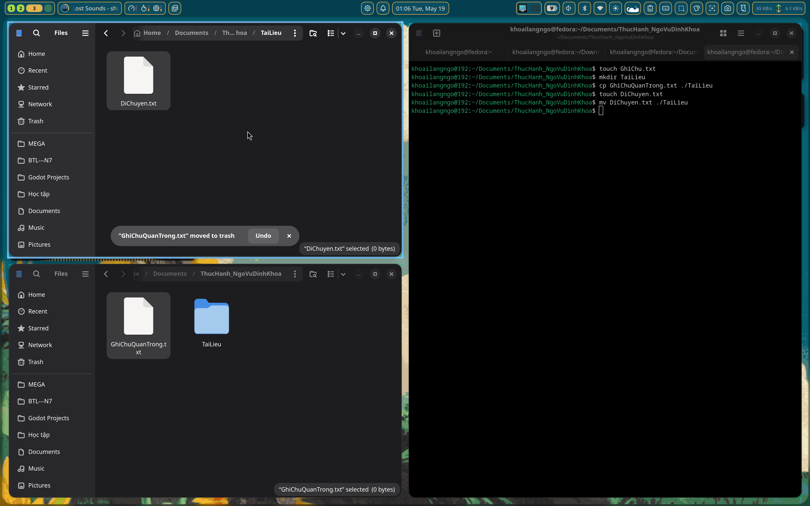
            <p>Để xoá một file vĩnh viễn, ta dùng lệnh rm, cú pháp là rm [file cần xoá 1] [file cần xoá 2]...</p>
            <code-box>rm DiChuyen.txt</code-box>
            <note-box type="warn">Lưu ý, file này chỉ ẩn đi dưới góc nhìn bình thường, file vẫn có thể khôi phục được nếu áp dụng các thuật toán truy hồi.</note-box>
            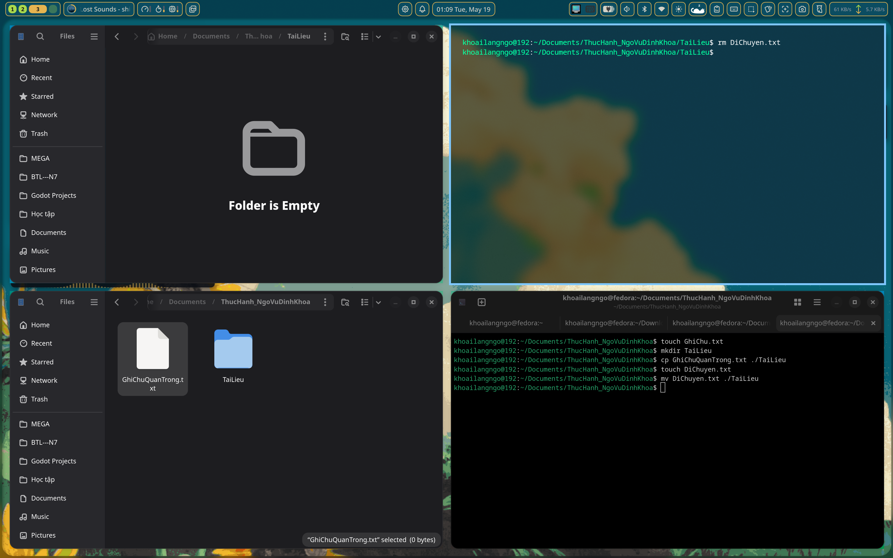
            <p>Nếu muốn khôi phục các file đã bị chuyển vào thùng rác, vào thùng rác, click chuột phải nhấn restore, tệp đó sẽ quay về vị trí cũ.</p>
            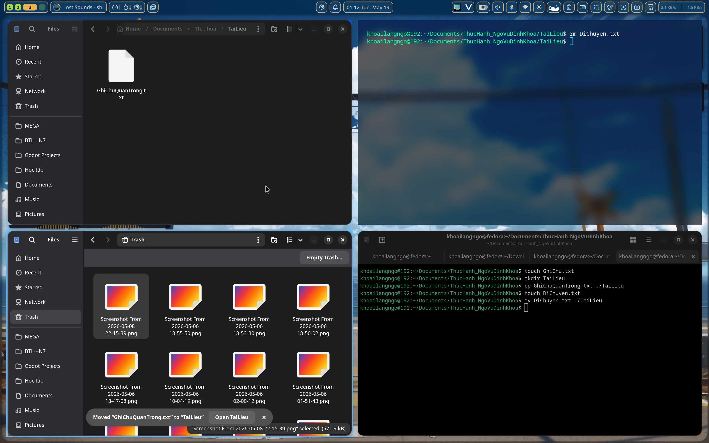
            <h3>Tổng kết</h3>
            <p>Chúng ta đã học được gì:</p>
            <ul>
                <li>mkdir: Tạo thư mục mới.</li>
                <li>touch: Tạo file mới.</li>
                <li>cp: copy một file vào một đường dẫn bất kì</li>
                <li>mv: di chuyển một file vào một đường dẫn bất kì</li>
                <li>rm: xoá một hoặc nhiều file</li>
            </ul>
            <p>Một số thông tin thêm:</p>
            <ul>
                <li>cp: lệnh dùng để di chuyển folder trong giao diện terminal.</li>
                <li>-r: đây là flag dùng để xoá và không thể khôi phục lại được, hãy cẩn thận khi dùng flag này.</li>
            </ul>
            <pdf-viewer src="../resource/week-1/info.pdf"></pdf-viewer>
        </div>
        
    </my-portfolio-box>
</template>